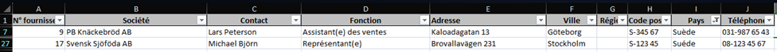
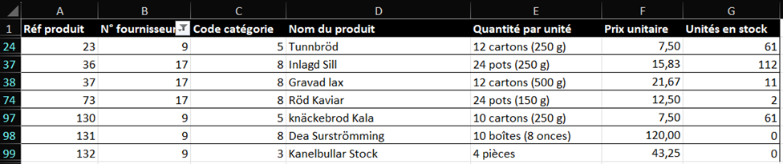

Contexte
Dans cette première mission nous allons d'abord prendre en main les données de KDou en étudiant la base de donnée et l'interrogeant sur excel.
Dans cette première mission nous allons d'abord prendre en main les données de KDou en étudiant la base de donnée et l'interrogeant sur excel.
Nous avons d'abord identifiés les clés primaires et secondaires :
FOURNISSEUR (N° fournisseur, Société, Contact, Fonction,
Adresse, Ville, Région, Code postal, Pays, Téléphone)
PRODUIT (Réf produit, N° fournisseur, Code
catégorie, Nom du produit, Quantité par unité, Prix unitaire, Unités en stock)
CATEGORIES (Code catégorie, Nom de catégorie,
Description)
CLIENTELE (Code client, Société, Contact, Adresse,
Ville, Code postal, Pays, Téléphone)
COMMANDE (N° commande, Code client, Date
commande, A livrer avant, Date envoi, Port)
DETAILCOMMANDE (Réf produit,
Voici quelques exemples et explications afin de comprendre au mieux le schéma ci-dessus, nous allons chercher plusieurs informations dans la base de données excel à travers des questions.
Pour trouver cette information, nous allons donc aller dans la table CLIENTELE et appliquer un filtre avec "*nantes*". On remarque ainsi qu'il y a seulement 3 clients Nantais :
| Code client | Société | Contact | Adresse | Ville | Code postal | Pays | Téléphone |
|---|---|---|---|---|---|---|---|
| COMMI | Pedro's house | Pedro Afonso | 67, rue des Cinquante Otages | Nantes | 44000 | France | 06.40.67.88.88 |
| DRACD | Table nantaise | Sven Ottlieb | 54, rue Royale | Nantes | 44000 | France | 06.40.32.21.21 |
| FURIB | Verre à soi | Lino Rodriguez | 6, rue Jean Baptiste Lulli | Nantes | 44000 | France | 06.61.77.61.10 |
On voit donc ici que la table CLIENTELE est organisée de la manière suivante :
CLIENTELE (Code client, Société, Contact, Adresse,
Ville, Code postal, Pays, Téléphone)
Pour trouver cette information, nous allons directement faire une recherche dans la table
FOURNISSEUR, on a donc l'adresse suivante :
22 rue H. Voiron Montceau [Region NULL] 71300 France
On voit donc ici que la table FOURNISSEUR est organisée de la manière suivante :
FOURNISSEUR (N° fournisseur, Société, Contact,
Fonction, Adresse, Ville, Région, Code postal, Pays, Téléphone)
- Pour trouver cette information nous avons d'abord cherchés les fournisseurs Suédois via un filtre dans la table FOURNISSEUR (on remarque d'ailleurs qu'il y a deux valeurs pour représenter le pays Suède) :
- Nous avons ensuite appliqué un filtre dans la table PRODUIT sur l'attribut "N° fournisseur" avec les 2 "N° fournisseur" trouvés ci-dessus (9 et 17) :
- Nous pouvons donc maintenant créer une table "résultat" comme ci-dessous qui résume les recherche :
| Fournisseurs | Offre de produits |
|---|---|
| Fournisseur PB Knäckebröd AB [9] | Tunnbröd, knäckebrod Kala, Dea Surströmming, Kanelbullar Stock |
| Fournisseur Svensk Sjöföda AB [17] | Inlagd Sill, Gravad lax, Röd Kaviar |
Pour conclure sur cette première approche de la base de données de KDou, nous pouvons affirmer que les données ne sont pas de bonne qualité. En effet, pendant notre étude nous avons relevé une multitude d'erreurs et d'incohérences. Aussi, il était très compliqué de faire des recherches plus avancées sur la base de données étant donné que nous étions sur Excel et qu'il n'y a pas de contraintes d'intégrités.
Pour améliorer les données on peut mettre en place plusieurs petites choses concernant la structure même de la base de données, en voici quelques exemples :
Mais, il faudra surtout changer d'outils pour parcourir cette base de données en utilisant par exemple Microsoft Access, ce qui nous permettrait d'appliquer des contraintes d'intégrité et ainsi "lier" les tables entre elles et avoir un ensemble de données beaucoup plus cohérent. On pourrait appliquer les contraintes d'intégrités suivantes :